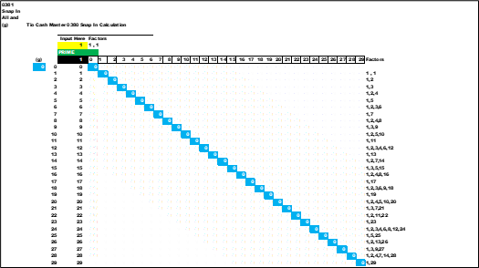
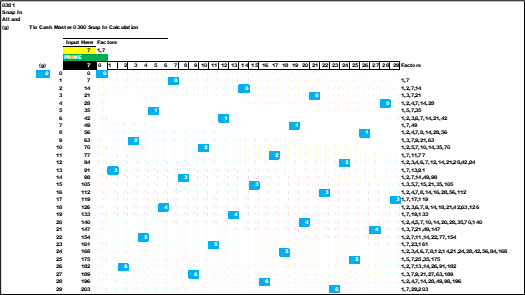
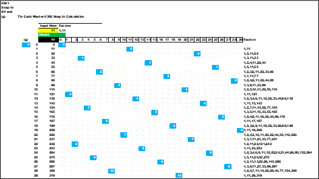
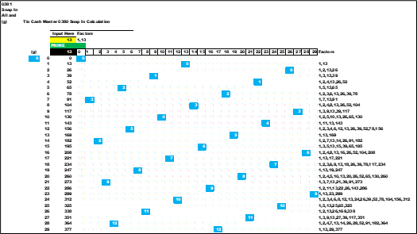
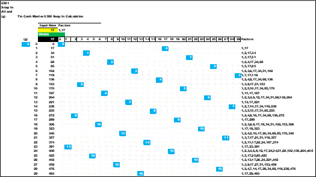
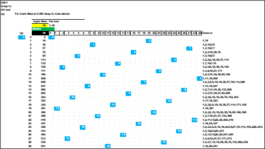
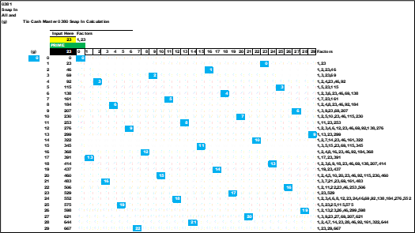
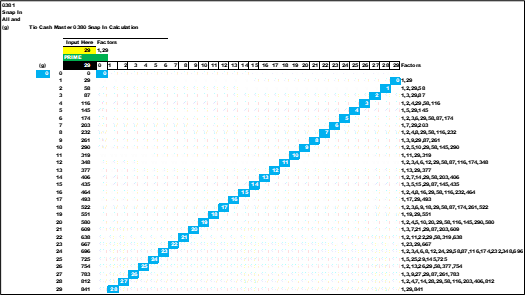
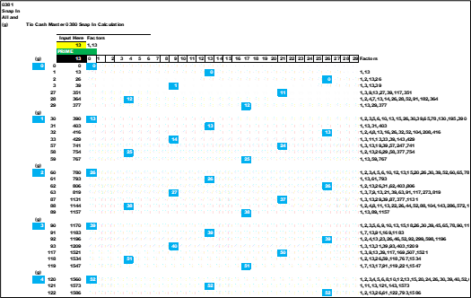

The below charts are for each of the eight *fam we are focused on. It is a cross with all the numbers between 0 and 29. The group of thirty using the *fam value as the key. This is a complete view of the prior Snap In sheets for all numbers. The blue cells are the PSL for the solution of PSL = (PS - *fam) / 30. Again , note the symmetry between *pairs charts.
*fam01
*fam07
*fam11
*fam13
*fam17
*fam19
*fam23
*fam29
This is a compressed view *fam13. The several rows in the middle of each group are hidden ; the first four and the last three for each group is presented. The group (g) is listed on the left side. This is the PS = 13 , in the yellow cell. The first cell under the zero column in blue will generate the (g) ; take the value in the cell and divide by PS (13 here). The blue cell under (g) is the adjacent number to the right , the '2nd factor' divided by thirty. The range is 0 to 29 ; the base is zero (0) add 30 to get to the next base and range. Two different methods to show how to generate the group (g) value. Remember the values in the matrix are generated by:
PSL = (PS - *fam / 30).
So far all the above arts and charts have shown how to generate numbers using the *fam formulas. For both prime and non-prime numbers.
next